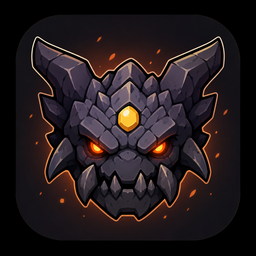

Como a galera vai te chamar por aqui?
Clique na sua foto para trocar o avatar.
Use um cabo de áudio virtual (ex: VB-Cable) na saída se quiser transmitir o áudio do sistema sem que as vozes da chamada vazem pra quem está assistindo.
Mensagem.